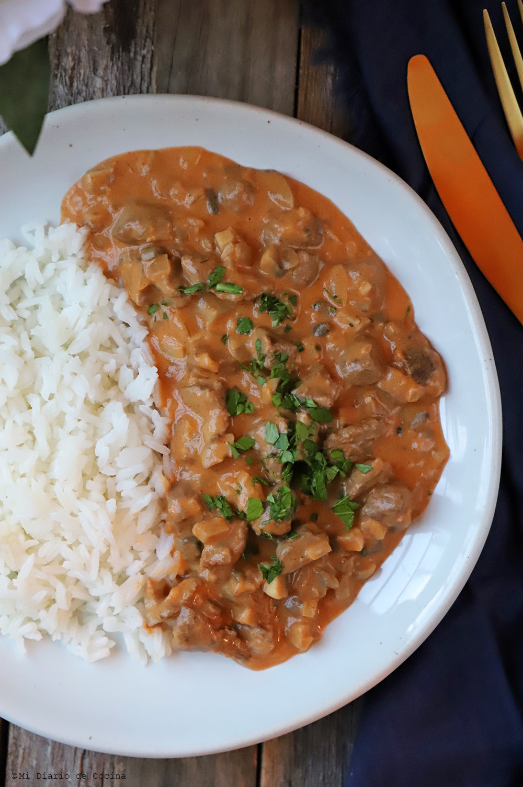

Strogonoff

Ingredientes:
Porcion para 5 personas:
- 1/2 Kg aprox de pollo o carne (lomo ideal)
- Sal - Pimienta blanca
- Harina para espolvorear
- 2 Cebollas grandes
- Manteca y/o aceite para dorar
- Oregano
- 1/2 Caja de pure de tomate
- Champignones
- 1/2 Crema de leche
- 1 Cucharada sopera al ras de mostaza
- 1 Vaso de queso cremoso
- Una taza de arroz por persona
Preparacion:
- Lavar el arroz y cocinarlo en una cacerola con agua hasta que este a punto
- Sacar bien la grasa y cortar la carne o pollo en tiritas, condimentar con sal y pimienta y luego espolvorear con un poco de harina revolviendo.
- Rayar 2 cebollas o procesarlas (se pueden picar) y cocinar en una sarten con manteca y un chorrito de aceite (para que no se queme la manteca) hasta que quede transparente o apenas dorado
- En otra sarten colocar un poco de aceite y cuando este caliente incorporarle la carne o pollo para que se doren y cocinen
- Mezclar ambas preparaciones y agregarle el oregano, el pure de tomate y cocinar un poco la carne o pollo, deben de quedar cocidos
- Agregarle el champignon, cortado en laminas medianas
- Agregar el vaso de queso cremoso y mezclar bien, la mostaza y mezclar bien
- Antes de servir agregarle la crema de leche y darle apenas una calentadita mas
Volver para atras